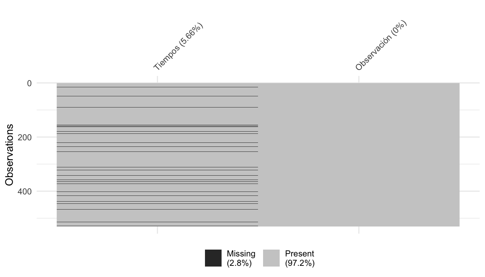
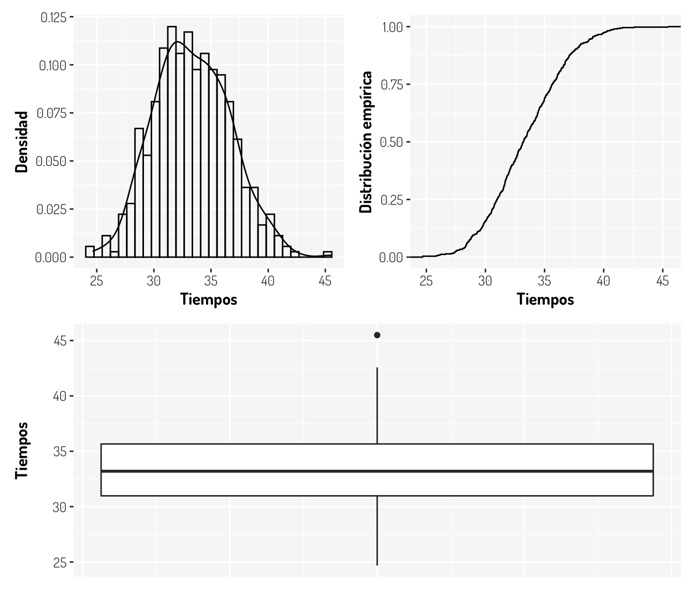
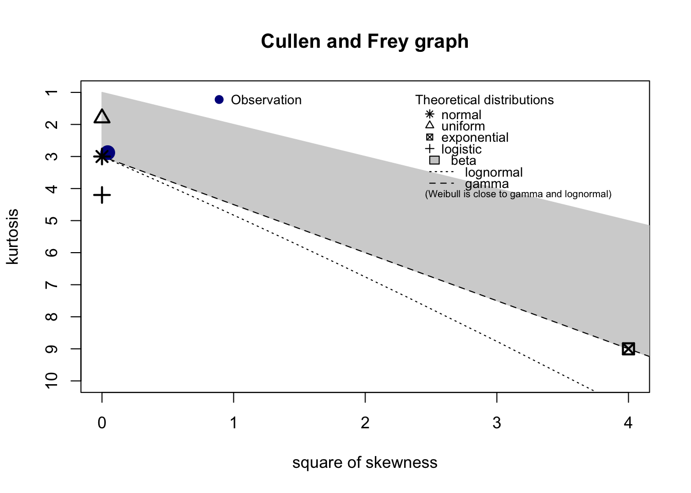
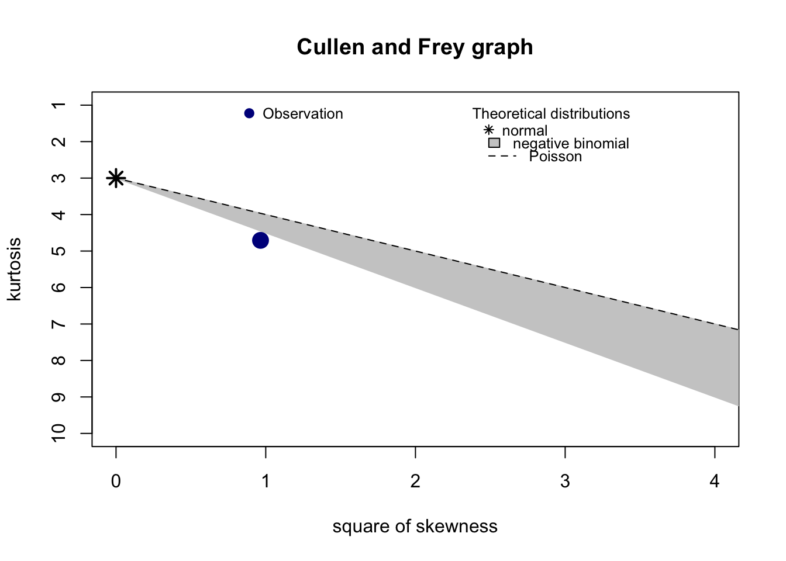
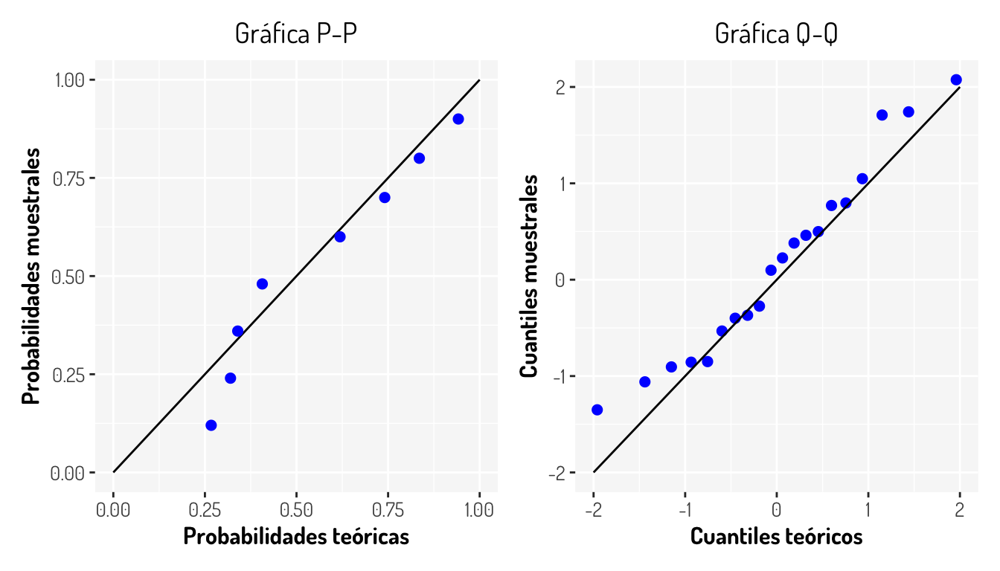

Capítulo 4 Pruebas de bondad y ajuste
De acuerdo al libro “Futbol y Matemáticas, Aventuras matemáticas del deporte rey”, la distribución de los máximos goleadores desde la temporada 1968/1987 a la temporada 2013/2014 queda representada con el siguiente histograma; ademas se menciona que dichos datos quedan modelados por una distribución Gumbel con parámetros \(a = 5.44\) y \(b = 26.9\).
Esto resulta muy interesante pero, ¿Cómo podemos tener certeza estadística de esta declaración? Bueno, esté será el objetivo de las pruebas de bondad de ajuste; determinan si cierta información queda ajustada bajo alguna distribución que propongamos.
Bajo esta idea, es importante que utilicemos todas nuestras herramientas estadísticas y probabilísticas para determinan si una distribución \(F\) es adecuada para mi información o no. Más adelante hablaremos un poco acerca del ejemplo anterior, por el momento es bueno tener en claro que deseamos probar la siguiente prueba de hipótesis:
\[ \begin{array}{c} \textbf{H}_0: \ \mbox{Los datos siguen una distribución} \ \ F_{0}(x) \\ vs\\ \textbf{H}_a: \ \mbox{Los datos no siguen una distribución} \ \ F_{0}(x) \end{array} \]
4.1 Funciones de distribución comunes y técnicas de identificación
Consideremos que tenemos los datos correspondientes al tiempo en segundos que tardar en pasar 100 automóviles por un cierto punto en una carretera. ¿Que distribución propondríamos como una primera idea? Aquí se muestran un poco los datos.
# A tibble: 50 × 2
Observación Tiempos
<int> <dbl>
1 1 32.4
2 2 28.8
3 3 36.1
4 4 28.7
5 5 28.5
6 6 34.1
7 7 28.3
8 8 33.0
9 9 39.3
10 10 37.1
# … with 40 more rowsPara dar un conjunto de candidatos, sería buena práctica responder las siguientes preguntas:
- ¿Que tipo de datos tengo, continuos o discretos?
- Sí son discretos, ¿Mis datos provienen de una variable de conteo?
- ¿Que rango ocupan mis datos?
- ¿Hay algún indicio de tratar con alguna cola pesada?
- ¿Que tan simétrica es mi distribución?
- ¿Cómo se comportan las estadísticas básicas en mis datos?
Además de esto, no olvidemos que estamos tratando con datos que pueden tener diversos problemas, por lo que podríamos primero hacer aplicar una limpieza para después continuar con el verdadero proceso. En este caso podemos ver los valores perdidos de esta manera:
visdat::vis_miss(data_autos, sort_miss=TRUE, warn_large_data = FALSE)
De acuerdo a nuestro problema podemos tratar de diferente manera los valores perdidos, pero lo más sencillo (lo cual debe ser el último recurso para evitar pérdida de información) es eliminar estos registros para no tener problemas posteriores
data_autos <- drop_na(data_autos)Ahora, para este caso es evidente que nuestros datos son continuos, por lo que podemos descartar todas las distribuciones discretas como la son la poisson (ideal para conteos), binomial (combinaciones \(k\) en \(n\)), geométrica (número de fallos antes del primer éxito), bernoulli (eventos con solo dos opciones de resultado), hipergeométrica (\(k\) éxitos en \(n\) ensayos sin remplazo), alguna distribución de la familia (\(a\),\(b\)), etc.
Genial, ahora sólo nos falta infinidad de distribuciones, ya que podría hacer alguna función que cumpla las propiedades de una función de distribución de probabilidad. Bajo este caso, vamos a considerar distribuciones conocidas. Véase que por la naturaleza de nuestro problema no es ideal considerar una distribución Normal (¿Por qué?). Vamos a ver algunas gráficas que podrían ser de ayuda.
boxplot_autos <- data_autos %>% ggplot(aes(x = Tiempos)) + geom_boxplot() + coord_flip() +
general_theme +
theme(axis.title.x=element_blank(),
axis.text.x=element_blank(),
axis.ticks.x=element_blank())
density_autos <- data_autos %>% ggplot(aes(x = Tiempos)) +
geom_density() + labs(y = "Densidad") +
geom_histogram(aes(y = ..density..), fill = NA, color = "black") + general_theme
ecdf_autos <- data_autos %>% ggplot(aes(x = Tiempos)) +
stat_ecdf(geom = "step") + labs(y = "Distribución empírica") + general_theme
(density_autos + ecdf_autos)/boxplot_autos
¿Qué podemos decir ahora?
Tal vez necesitamos más ayuda; véamos las estadísticas básicas sobre estos datos
- Media = 33.3707742
- Mediana = 33.1964279
- Moda = 31.64
- Varianza = 10.8163016
- Desviación estandar = 3.2888146
- Rango intercuantil = [30.9755958, 35.6583154]
- Coeficiente de variación = 10%
- Coeficiente de asimetría (Skewness) = 0.2075035
- Curtosis = 2.8698984
Recordemos que tanto la media, la mediana y la moda son estadísticas de tendencias centrales; la varianza y la desviación estandar nos dan una cantidad asociada a lo disperso que son nuestros datos; el rango intercuantil es la diferencia entre el tercer y el primer cuartil y podemos pensarlo como una medida de variabilidad de acuerdo a la mediana. Por otro lado, el coeficiente de variación (\(C_V = \frac{\sigma}{\bar{x}}\)) es la relación entre el tamaño de la media y la variabilidad de la variable que podemos interpretar como un grado de variabilidad independiente de la escala de la variable. El coeficiente de asimetría nos indica que tan simétrica es nuestra distribución, la normal tiene un coeficiente igual a 0. Finalmente la curtosis nos da una idea de la forma de nuestra distribución por la concentración de datos.
Entonces, ya con las gráficas, la metadata de los datos y las estadísticas anteriores, podemos dar posibles distribuciones candidatas para nuestos datos.
• Al ser los valores mayores a cero y continuos, descartamos cualquier variable discreta y cualquiera que tenga un rango con valores negativos (como la normal y la t de Student), además de que se tienen valores mayores a uno por lo que se descartan otras distribuciones como la beta.
• La densidad no tiene colas pesadas, en todo caso, la cola donde tiene la mayor cantidad de outliers es la cola derecha; por lo que descartamos distribuciones con colas muy pesadas (como la log-Normal, Pareto y Burr)
• Al tener una curtosis positiva, indica la presencia de un pico y al tener un coeficiente de variación del 10%; los valores no varían demasiado de la media, lo cual, generalmente no cumple la distribución exponencial, por lo que podemos pensar en una función gamma o weibull para ajustar estos datos.
• Si bien la distribución Weibull nos ayuda a modelar el tiempo en algunos escenarios, con sólo leer el enunciado es natural proponer una distribución gamma, ya que esta variable nos ayuda a modelar el tiempo; además de que podemos pensar a una distribución gamma como una suma de \(n\) variables independientes con distribución exponencial, la cual nos ayuda a modelar el tiempo de espera a que suceda un evento, en este caso el tiempo en que cada auto pasa por dicho punto en la carretera. Por si faltaba alguna otra razón si pensamos en su parámetro de escala como la cantidad de autos que estamos considerando (100), su coeficiente de simétrica teórica será \(2/\sqrt{100} = 0.2\) la cual no es muy diferente al que obtuvimos.
Ya tenemos propuesto uno de los parámetros para la distribución gamma, pero falta el parámetro de escala; (si conocieramoos cada cuanto pasan los coches de manera individual podríamos proponer este parámetro) por lo que podemos obtenerlo con alguna de las distintas técnicas que tenemos para calcular parámetros, ya sea por el método de momentos, máxima verosimilitud, con el UMVUE, etc.
Para este caso, una propuesta para estos estimadores basados en la función de máxima verosimilitud son las siguientes:
\[ \hat{k} = \frac{N\sum_{i = 1}^Nx_i}{N\sum_{i = 1}^Nx_i\ln(x_i)-\sum_{i = 1}^N\ln(x_i)\sum_{i = 1}^Nx_i}\\ \hat{\theta} = \frac{1}{N^2}\left(N\sum_{i = 1}^Nx_i\ln(x_i)-\sum_{i = 1}^N\ln(x_i)\sum_{i =1}^Nx_i\right) \]
4.2 Programación y evaluación
Otra manera que tenemos de calcular los parámetros es a través de métodos numéricos, como lo realiza la función fitdistrplus::fitdist() y nos da diferentes estadísticas como el AIC, BIC y Likehood ratio test en diferentes métodos de estimación para que nosotros decidamos cual elegir. En este caso podemos aplicarlo de la siguiente manera
fitdist(data = data_autos$Tiempos, distr = "gamma", method = "mme")Fitting of the distribution ' gamma ' by matching moments
Parameters:
estimate
shape 103.162826
rate 3.091412Como vemos no estabamos tan alejados con nuestra propuesta, además, ya sabiendo que el parámetro de escala es \(\sim 3 = \lambda\), podemos pensar que la tasa a la que cada auto pasa, en promedio, es 3 segundos, es decir que cada .3 segundos un nuevo auto pasa.
Vamos a ajustar con la prueba \(\chi^2\) para determinar que tan bien se ajustan nuestros datos.
#Observados
corte<- cut(data_autos$Tiempos, breaks = 5)
observados<-table(corte)
#Levels: (24.7,28.8] (28.8,33] (33,37.2] (37.2,41.3] (41.3,45.5]
#Esperados
int1<-pgamma(q = 28.8, rate = 3.091412, shape=103.162826)-pgamma(q = 0, rate = 3.091412, shape=103.162826)
int2<-pgamma(q = 33, rate = 3.091412, shape=103.162826)-pgamma(q = 28.8, rate = 3.091412, shape=103.162826)
int3<-pgamma(q = 37.2, rate = 3.091412, shape=103.162826)-pgamma(q = 33, rate = 3.091412, shape=103.162826)
int4<-pgamma(q = 41.3, rate = 3.091412, shape=103.162826)-pgamma(q = 37.2, rate = 3.091412, shape=103.162826)
int5<-pgamma(q = Inf, rate = 3.091412, shape=103.162826)-pgamma(q = 41.3, rate = 3.091412, shape=103.162826)
esperados<-c(int1,int2,int3,int4,int5)
#Hacemos la prueba
chisq.test(x = observados, p = esperados)
Chi-squared test for given probabilities
data: observados
X-squared = 1.3959, df = 4, p-value = 0.8449¿Qué podemos concluir?
Vamos a colocar unos parámetros con menos decimales para ver que sucede
#Esperados
int1<-pgamma(q = 28.8, rate = 3, shape=100)-pgamma(q = 0, rate = 3, shape=100)
int2<-pgamma(q = 33, rate = 3, shape=100)-pgamma(q = 28.8, rate = 3, shape=100)
int3<-pgamma(q = 37.2, rate = 3, shape=100)-pgamma(q = 33, rate = 3, shape=100)
int4<-pgamma(q = 41.3, rate = 3, shape=100)-pgamma(q = 37.2, rate = 3, shape=100)
int5<-pgamma(q = Inf, rate = 3, shape=100)-pgamma(q = 41.3, rate = 3, shape=100)
esperados<-c(int1,int2,int3,int4,int5)
#Hacemos la prueba
chisq.test(x = observados, p = esperados)
Chi-squared test for given probabilities
data: observados
X-squared = 0.9446, df = 4, p-value = 0.9181Mejoró considerablemente el ajuste.
En cuanto al ejemplo de la cantidad de goles, la distribución que se ajusta es una distribución ideal para modelar datos extremos (Gumbel). Esta se utiliza para mostrar que en la temporada 2011/2012, Messi anotó en total 50 goles y que esto fue un hecho excepcional ya que con esta modelación, la probabilidad acumulada de que alguien vuelva a anotar más de 50 goles es de 1.36% o 1/73, lo que quiere decir que “deberíamos esperar una actuación como la de Messi una vez cada 73 años. La esperanza media de vida en Argentina es de 75 años. Visto desde esa perspectiva, Messi es realmente un acontecimiento que ocurre una vez en la vida”[2]
Una manera de proponer de manera inicial una distribución para un conjunto de datos es haciendo una gráfica donde se compare la curtosis (la forma de la distribución) contra el coeficiente de asimetría (comunmente tomado al cuadrado) en una gráfica conocida como Cullen and Frey graph. La idea es comparar estas dos estadísticas que ayudan a tener una idea de la forma de la distribución entre diversas distribuciones comunes y los datos muestrales. Esta gráfica la podemos obtener mediante la función fitdistrplus::descdist()
proposals_timeCar <- fitdistrplus::descdist(data_autos$Tiempos[!is.na(data_autos$Tiempos)])
Como se aprecia, la gráfica anterior nos sugiere diferentes distribuciones (normal, beta, gamma y log-normal) de la cual sabemos que la gamma es la que tiene una mejor justificación en este caso. Otro punto a considerar es que la función anterior otorga sugerencias en el ámbito continuo y discreto. Las distribuciones sugeridas sólo son propuestas, por lo que se recomienda siempre hacer pruebas de bondad y ajuste con dichas distribuciones.
set.seed(50)
example_d <- fitdistrplus::descdist(rpois(100,lambda=2),discrete=TRUE)
4.3 Comparación de pruebas
Además de la prueba Ji-cuadrada tenemos distintas pruebas que tienen ciertas ventajas y desventajas. Algunas de ellas son las siguientes y las referencias se pueden consultar al final de este capítulo:
| Prueba | Ventajas | Desventajas |
|---|---|---|
| \(\chi^2\) | \(\bullet\) Utilizado para variables discretas y continuas. |
\(\bullet\) Depende de un adecuado tamaño muestras. \(\bullet\) No adecuado para muestras pequeñas. \(\bullet\) Sensible a las agrupaciones propuestas (the choice of the bins). \(\bullet\) El punto anterior afectará el poder de la prueba |
| Kolmogorov-Smirnov |
\(\bullet\) No depende de la función de distribución subyacente. \(\bullet\) Test exacto. \(\bullet\) Existen modificaciones para datos discretos y censurados. |
\(\bullet\) Sólo para variables continuas. \(\bullet\) Tiende a ser más sensible cerca del centro de la distribución que en las colas. \(\bullet\) La distribución subyacente debe ser completamente especificada. \(\bullet\) Se reduce la potencia cuando se estiman los parámetros de la distribución subyacente. |
| Lilliefors |
\(\bullet\) Prueba con mayor potencia que en K-S. \(\bullet\) Prueba adecuada para normalidad cuando se estiman los parámetros desde la muestra. |
\(\bullet\) Sólo para variables continuas. |
| Anderson Darling |
\(\bullet\) No depende de la función de distribución subyacente. \(\bullet\) Da un mayor peso a las colas de la distribución \(\bullet\) Existen ponderaciones para el estadístico que aumentan la potencia de la prueba. \(\bullet\) Prueba con mayor potencia que en K-S. |
\(\bullet\) La distribución subyacente debe ser completamente especificada. \(\bullet\) Sólo para variables continuas. |
| Cramér-von-Mises | \(\bullet\) Prueba con mayor potencia que en K-S | \(\bullet\) Sólo para variables continuas. |
También consideremos lo siguiente:
- Las últimas tres pruebas son mejoras sobre la prueba de Kolmogorov-Smirnov.
- La pruebas Anderson–Darling es una estadística EDF (empirical distribution function) cuadrática.
- Otra prueba con un estadístico EDF cuadrático es la prueba de Cramér–von Mises.
- La prueba de Watson es una modificación de la prueba de Cramér–von Mises.
Aquí se enlistan algunas opciones para realizar dichas pruebas en R:
- Prueba Chi-square:
stats::chisq.test() - Prueba Kolmogorov-Smirnov:
stats::ks.test() - Prueba Lilliefors:
KScorrect::LcKS() - Prueba Anderson-Darling:
goftest::ad.test() - Prueba Cramer-von Mises:
goftest::cvm.test()
Otro punto interesante cuando se esta probando la pertenencia de una distribución sobre una muestra es el uso de gráficos para comprobar tal hipótesis. Esto se puede realizar mediante las gráficas Q-Q Plot y P-P Plot, donde básicamente se comparan los cuantiles o probabilidades muestrales contra los teóricos. La idea es que si la muestra sigue una cierta distribución \(F^*\), entonces los cuantiles de dicha distribución (por ejemplo) deberán ser muy cercanos a los cuantiles muestrales; si estos se comparan en una gráfica de dispersión y si lo anterior sucede, entonces las observaciones deberán caer sobre una recta con pendiente 1 e intercepto 0 como en los siguientes ejemplos.

La pregunta natural que surge aquí es: Si tenemos pruebas estadísticas, ¿Para qué utilizar gráficas? Bueno, resulta que las pruebas aveces nos pueden dar resultados no adecuados a la realidad, ya sea por las mismas deficiencias de la prueba o por algunos otros factores como el tamaño muestral.
En el siguiente artículo se puede ver como el tamaño muestral puede alterar los resultados de las pruebas (como en general sucede con pruebas de hipótesis) por lo que nunca estará demás (y es necesario) dar una justificación gráfica para reforzar nuestra conclusión sobre la hipótesis nula.
4.4 El caso de la normal
Los puntos anteriores son consideraciones en general que se deben tener en cuenta al tratar con una distribución \(F^*\). El caso de la distribución es muy especial ya que es uno de las distribución más utilizadas en este tipo de pruebas al ser una distribución muy común que se utiliza como supuestos en distintas aplicaciones como en la regresión lineal y el análisis de discriminante.
En el paper Power Comparisons of Shapiro-Wilk, Kolmogorov-Smirnov, Lilliefors and Anderson-Darling Tests se hace una comparación entre diversas pruebas de bondad y ajuste sobre una distribución normal utilizando la potencia (simulada a través del método Monte Carlo) de cada una de las pruebas. Aquí se dejan algunas gráficas que se mencionan en dicho paper.
%201.30.57.png)
Imagenes tomadas del artículo Power Comparisons of Shapiro-Wilk, Kolmogorov-Smirnov, Lilliefors and Anderson-Darling Tests
Es clara la superioridad de la prueba Shapiro Wilks ya que de hecho esta fue diseñada para probar la normalidad en una muestra aleatoria, muchas veces esta es conocida como la prueba más potente para probar normalidad.
Sea cual sea la prueba que se desee realizar, estas pueden ser efectuadas en R con las siguientes funciones:
- Prueba Shapiro-Wilk:
stats::shapiro.test - Prueba Anderson-Darling:
nortest::ad.test() - Prueba Cramer-von Mises:
nortest::cvm.test() - Prueba Lilliefors:
nortest::lillie.test() - Prueba Pearson chi-square:
nortest::pearson.test(). - Prueba Shapiro-Francia:
nortest::sf.test().
El contenido visto hasta ahora es llamado no paramétrico porque no es necesario algún supuesto relacionado con alguna distribución. Aunque es importante siempre tener en cuenta que las técnicas basadas en supuestos distributivos específicos son en general más poderosas. Por lo que si se puede confirmar el supuesto distributivo, generalmente se prefieren las técnicas paramétricas.
Finalmente, aquí se dejan ciertos enlaces que pueden ser de interés:
- Kolmogorov-Smirnov Goodness-of-Fit Test
- Kolmogorov-Smirnov and related tests: Use & misuse -Chi-Square Goodness-of-Fit Test -Chi-square goodness-of-fit test, more details
- Anderson-Darling Test
- Anderson-Darling and Shapiro-Wilk tests
- Test for Normality
- 6 ways to test for a Normal Distribution — which one to use?
- Shapiro-Wilk Test: What it is and How to Run it
- Use of the package fitdistrplus to specify a distribution from non-censored or censored data